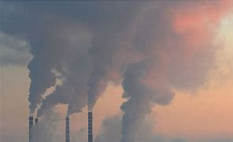
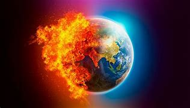
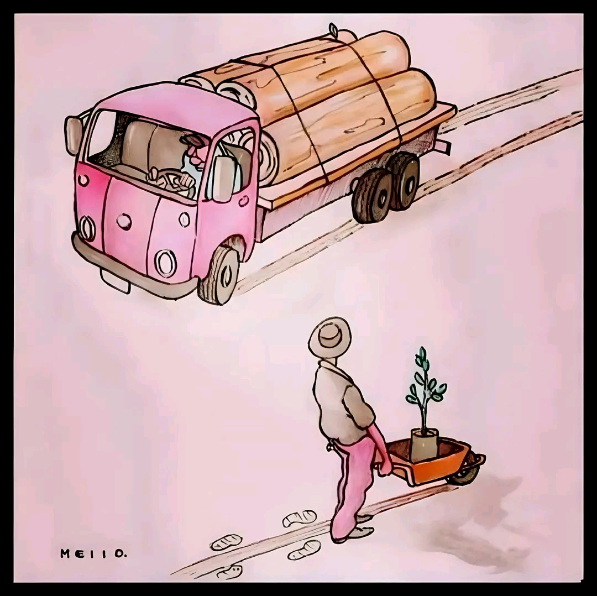
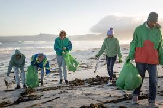
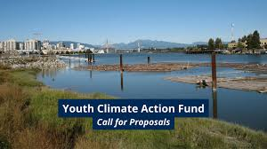
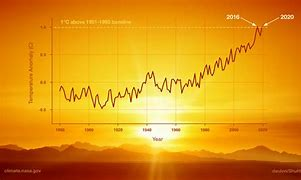
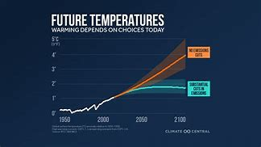

Global
Climate Change Updates
Climate change is projected to cause an increase in average temperatures in Zambia and a decline in rainfall, particularly in the southern and western regions.
HomeClimate change is projected to cause an increase in average temperatures in Zambia and a decline in rainfall, particularly in the southern and western regions.
HomeUnited Nations on Climate Change
Climate change refers to long-term shifts in temperatures and weather patterns. Such shifts can be natural, due to changes in the sun’s activity or large volcanic eruptions. But since the 1800s, human activities have been the main driver of climate change, primarily due to the burning of fossil fuels like coal, oil and gas.
Burning fossil fuels generates greenhouse gas emissions that act like a blanket wrapped around the Earth, trapping the sun’s heat and raising temperatures.
The main greenhouse gases that are causing climate change include carbon dioxide and methane. These come from using gasoline for driving a car or coal for heating a building, for example. Clearing land and cutting down forests can also release carbon dioxide. Agriculture, oil and gas operations are major sources of methane emissions. Energy, industry, transport, buildings, agriculture and land use are among the main sectors causing greenhouse gases.

Climate scientists have showed that humans are responsible for virtually all global heating over the last 200 years. Human activities like the ones mentioned above are causing greenhouse gases that are warming the world faster than at any time in at least the last two thousand years.
The average temperature of the Earth’s surface is now about 1.2°C warmer than it was in the late 1800s (before the industrial revolution) and warmer than at any time in the last 100,000 years. The last decade (2011-2020) was the warmest on record, and each of the last four decades has been warmer than any previous decade since 1850.
Many people think climate change mainly means warmer temperatures. But temperature rise is only the beginning of the story. Because the Earth is a system, where everything is connected, changes in one area can influence changes in all others.
The consequences of climate change now include, among others, intense droughts, water scarcity, severe fires, rising sea levels, flooding, melting polar ice, catastrophic storms and declining biodiversity.
Climate change can affect our health, ability to grow food, housing, safety and work. Some of us are already more vulnerable to climate impacts, such as people living in small island nations and other developing countries. Conditions like sea-level rise and saltwater intrusion have advanced to the point where whole communities have had to relocate, and protracted droughts are putting people at risk of famine. In the future, the number of people displaced by weather-related events is expected to rise.
In a series of UN reports, thousands of scientists and government reviewers agreed that limiting global temperature rise to no more than 1.5°C would help us avoid the worst climate impacts and maintain a livable climate. Yet policies currently in place point to a 3°C temperature rise by the end of the century.
The emissions that cause climate change come from every part of the world and affect everyone, but some countries produce much more than others.The seven biggest emitters alone (China, the United States of America, India, the European Union, Indonesia, the Russian Federation, and Brazil) accounted for about half of all global greenhouse gas emissions in 2020.
Everyone must take climate action, but people and countries creating more of the problem have a greater responsibility to act first.
Many climate change solutions can deliver economic benefits while improving our lives and protecting the environment. We also have global frameworks and agreements to guide progress, such as the Sustainable Development Goals, the UN Framework Convention on Climate Change and the Paris Agreement. Three broad categories of action are: cutting emissions, adapting to climate impacts and financing required adjustments.
Switching energy systems from fossil fuels to renewables like solar or wind will reduce the emissions driving climate change. But we have to act now. While a growing number of countries is committing to net zero emissions by 2050, emissions must be cut in half by 2030 to keep warming below 1.5°C. Achieving this means huge declines in the use of coal, oil and gas: over two-thirds of today’s proven reserves of fossil fuels need to be kept in the ground by 2050 in order to prevent catastrophic levels of climate change.
Adapting to climate consequences protects people, homes, businesses, livelihoods, infrastructure and natural ecosystems. It covers current impacts and those likely in the future. Adaptation will be required everywhere, but must be prioritized now for the most vulnerable people with the fewest resources to cope with climate hazards. The rate of return can be high. Early warning systems for disasters, for instance, save lives and property, and can deliver benefits up to 10 times the initial cost.
Climate action requires significant financial investments by governments and businesses. But climate inaction is vastly more expensive. One critical step is for industrialized countries to fulfil their commitment to provide $100 billion a year to developing countries so they can adapt and move towards greener economies.
To get familiar with some of the more technical terms used in connection with climate change, consult the Climate Dictionary.
Click here to learn moreYouth Climate Action Fund
With 84 percent of youth around the world reporting that they are worried climate change threatens people and the planet, in April of 2024, Bloomberg Philanthropies launched the Youth Climate Action Fund which will provide technical assistance and funding for 100 mayors to activate tens of thousands of young people ages of 15 – 24 years to design, produce, and govern urgent climate solutions in their cities. The cities in the Fund span 38 countries across six continents, representing over 62 million residents.
Each city will receive $50,000 to distribute as microgrants to fund a groundswell of youth-led climate initiatives that meet local contexts and objectives. From mobilizing tree-planting or public education campaigns to launching recycling or waste reduction initiatives to participating in mitigation planning or preparedness programs, efforts stemming from the new Youth Climate Action Fund will advance critical community goals such as meeting decarbonization commitments or reducing consumption-based emissions. Cities that respond to the urgency of the moment and commit the initial $50,000 within six months will receive an additional $100,000 to support more youth-driven projects over the course of one year.
The climate crisis poses an existential threat to communities, and mayors are the first and last mile of response: tackling emergencies and trialing interventions from the frontlines. Over the last decade, local governments have played a critical role in climate mitigation and adaptation – and this is only expected to grow in the coming decade. Many cities are reducing per capita emissions faster than their national governments.
Few city halls have the organizational capacity, capabilities, and confidence to unleash youth energy on solution-building. Kickstarted at the Bloomberg Philanthropies Mayors Innovation Studio at COP28, as a part of the Local Climate Action Summit, the Bloomberg Philanthropies Youth Climate Action Fund will provide the cities with the tools, techniques, and supports to leverage innovation approaches that invite and foster robust youth collaboration in climate problem-solving and policymaking. The program will be delivered by United Cities and Local Governments in partnership with the Bloomberg Center for Public Innovation at Johns Hopkins University.
Click here to learn moreGlobal Warming
Changes observed in Earth’s climate since the mid-20th century are driven by human activities, particularly fossil fuel burning, which increases heat-trapping greenhouse gas levels in Earth’s atmosphere, raising Earth’s average surface temperature. Natural processes, which have been overwhelmed by human activities, can also contribute to climate change, including internal variability (e.g., cyclical ocean patterns like El Niño, La Niña and the Pacific Decadal Oscillation) and external forcings (e.g., volcanic activity, changes in the Sun’s energy output, variations in Earth’s orbit).
“Climate change” and “global warming” are often used interchangeably but have distinct meanings. Similarly, the terms "weather" and "climate" are sometimes confused, though they refer to events with broadly different spatial- and timescales.
Click here to learn moreScientists recently checked up on Earth's 'vital signs.' So how are we doing?
Entitled "The 2024 state of the climate report: Perilous times," the assessment found that 25 of the 35 of the measurements used to track the planet's climate risk, from ocean temperatures to tree cover loss, are at record levels.
These measures look at both how humans are changing the planet, and how the planet is responding.
"We are on the brink of an irreversible climate disaster," the authors wrote. "This is a global emergency beyond any doubt."
At the same time, the report also found some surprising signs of progress that experts say point to a path forward. And that's where we'll start.
Overall, however, we are emitting more greenhouse gases than ever, on both a global and individual level.
Click here to learn more